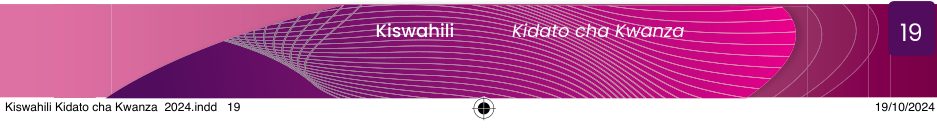

“Majira ya alfajiri, anga bado limefunga; je, kuna kitu kinacholizunguka asubuhi hii?”
“Mh! Naona ni asubuhi lakini bado giza; kwa hali hii, inawezekana mvua ikanyesha.”
Jumaleo hakuishia hapo. Pamoja na hali iliyokuwa imewamba, aliamua kuanza safari yake. Njiani alikutana na viumbe na mandhari ya kuvutia. Moyo wake ulijawa na mshangao alipokuwa akipita mahali asipopajua na kuona maajabu yake. Ghafla! Aliangukia kwenye pori lenye utulivu! Alionekana kuwa na hofu. “Mh! Kunapitika kweli?” Aliwaza. Punde si punde, sauti ya simba ikasikika. “Lo! ni nani anayewindwa muda huu?” Alisikika Jumaleo akijiuliza. Pamoja na hofu iliyokuwa imetanda, bado hakukata tamaa. Aliendelea na safari yake mpaka ayafikie malengo yake. Njiani alikabiliana na changamoto na vizuizi kwa ujasiri. Alipambana nazo bila woga. Alijiuliza moyoni, “Safari yangu itaishia wapi? Mbona barabara ni ndefu na ngumu?” Hata hivyo, aliendelea na safari akiwa na hamu ya kufika anakoelekea.
Alipokuwa akiendelea na safari, alikutana na pango la ajabu lenye mlango wa dhahabu. Akajisemea moyoni, “Hapahapa ndipo mwisho wa safari yangu.” Akaamua kuingia ili apumzike kwa kuwa giza lilikuwa limetanda. Ghafla, alikutana na joka la kutisha kwenye mlango wa pango. Magamba yake yalikuwa yakimemeta mithili ya mwanga wa jua. Kumbe mlango huo ulikuwa ukilindwa na hilo joka! Ama kweli, kukwangua kichwa, hakukunyimi chombo. Kwa ujasiri mkubwa, Jumaleo alikabiliana na lile joka. Baada ya pigano la muda mrefu, Jumaleo aliibuka mshindi; alisikika akisema, “Kweli kufika kwa mguu, hakuhesabu ujanja.”
Angali akitafakari jinsi safari yake ilivyokuwa na changamoto, ghafla Jumaleo aliamka usingizini na kujiona yuko palepale nyumbani kwake. Hakika ndoto ni kitu cha ajabu sana. Jumaleo alifurahi kuamka kwani ndoto hiyo ilikuwa ya kutisha sana.
Maswali
